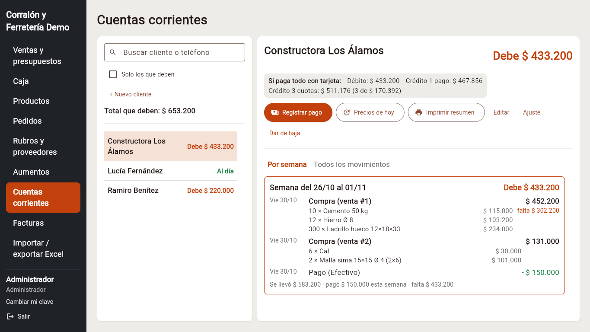
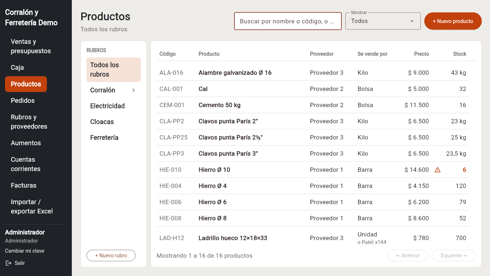
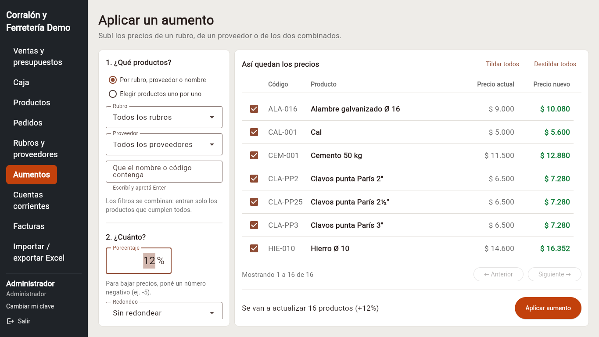

Apps web progresivas
Apps web progresivasCliente real, en uso
Sistema para corralón y ferretería
- Python
- Flet
- SQLite
Sistema de escritorio a medida para un corralón y ferretería que trabajaba todo en papel. Lo desarrollé, lo instalé en el local y está en uso desde octubre de 2026, con versiones nuevas según lo que el cliente pide al usarlo.
- Ventas y presupuestos en una sola pantalla, con buscador, lector de código de barras, atajos de teclado y recargos por tarjeta. Tickets en impresora térmica (ESC/POS).
- Cuentas corrientes por semana, con pagos, actualización de deudas a precios de hoy y resumen en PDF para mandar por WhatsApp.
- Productos por rubro y proveedor (pensado para 10.000), stock con historial, aumentos masivos con vista previa y deshacer, y pedidos a proveedores en PDF.
- Facturación electrónica con ARCA: Factura C y nota de crédito con los web services oficiales, firma digital y código QR.
- Caja, usuarios con permisos, copias de seguridad automáticas (también en Google Drive) e importación y exportación de Excel.
- 584 pruebas automáticas, migraciones de la base de datos y una prueba de carga con 10.000 productos. Se instala como ejecutable para Windows.
El código es privado porque es de un cliente


